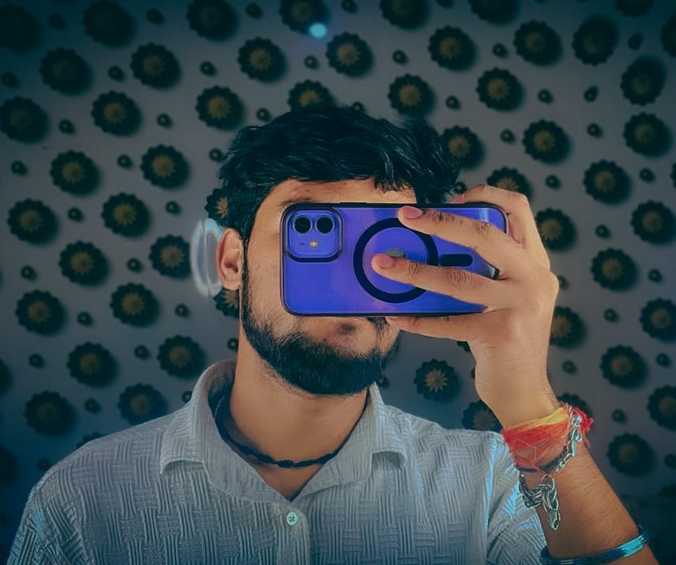

Hi, I'm Aryan Rajbhar,
I am a Computer Science student and aspiring Software Engineer with a passion for AI, machine learning, and web technologies. Currently in my 3rd year of B.Tech, I have hands-on experience in Full-Stack Development, which I use to develop creative and functional solutions.
One of my key projects includes a Personalized AI system that I built on my laptop, reflecting my curiosity and commitment to innovation. I am also working on moreprojects to share my insights and contribute to the AI community.
Beyond coding, I enjoy exploring new technologies, solving complex problems, and collaborating on exciting projects. I am eager to apply my knowledge to real-world challenges and continue growing as a developer.